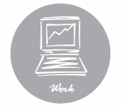

|

"Downtown is good for Business”
By Mark Schmitz
-
Mark
Schmitz works for Zebradog Studios (ZD Studios), located in downtown
Madison , which is a branding firm that develops graphic and color
schemes for downtown signage and themes, as well as other large
projects, such as stadiums.
- The
signage or theme of a downtown is often overlooked in the planning
process, but they are important to consider because they help people
identify your downtown area and make it more aesthetically pleasing.
-
Design firms are attracted to downtowns and historical buildings because they allow and inspire creativity
- Having coffee shops and restaurants within walking distance of their office is a main reason Zebradog is located downtown
- Public
transportation access is another reason for locating downtown. Zebradog
pays for employees who choose to take the bus to work, otherwise
parking is $100/month.
-
The State Street Design Project
- Zebradog
is designing the signs, maps, planters, bus shelters, lampposts, and
other objects for the State Street redevelopment in Madison .
- One
major feature of the new signage will be the increased emphasis on
differentiating the blocks of State Street by naming them and giving
each a color.
- Signs identifying the “State
Street District” will be placed a block and a half off of State Street
to notify visitors that they are getting close to the street.
-
The Pabst Farms Development
- Zebradog
is responsible for naming all the streets of the Pabst Farms
development in Oconomowoc as well as designing all of the signage.
- Signage
that is well done creates a brand for the area that residents and
visitors identify with. This brand is helpful when trying to find
tenants or sell property in Pabst Farms.
-
Lambeau Field Renovation in Green Bay , WI
- The challenge of Lambeau Field was to give the stadium a fresh look while preserving the history of the building and team.
- Preserving
history is a challenge that many downtowns face when they redevelop. It
is important that they create a theme that is appealing and embraces
the history of the area.
-
Camp Randall Stadium in Madison , WI
- Like
Lambeau Field, the challenge of redeveloping Camp Randall Stadium is
preserving the historic character of the building in its signage.
- In
addition, Camp Randall acts as the gateway to the University of
Wisconsin campus from the west, and thus must create a feeling of
entrance to the campus.
|